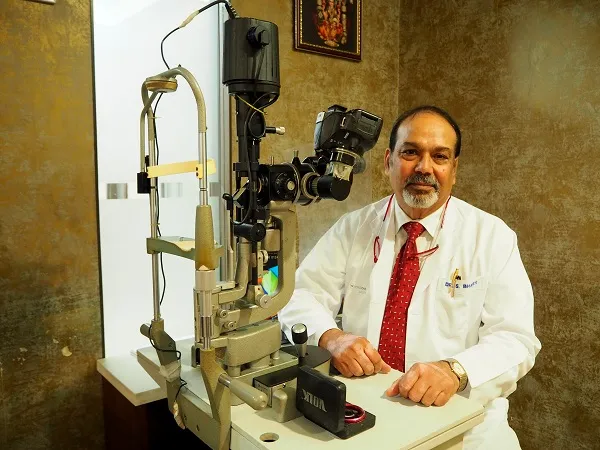
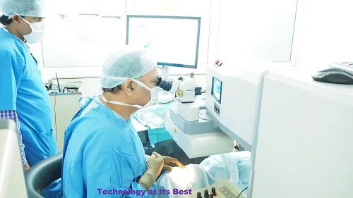

About Us - Bharti Eye Foundation
ONE OF INDIA'S LEADING OPHTHALMOLOGISTS.
Bharti Group of Eye Hospitals, a brainchild of Dr. Sudhank Bharti, started its journey way back in 1985.
Dr. Bharti practised his specialization in Cornea, Cataract & Refractive Surgery in England with Dr. J. J. Kanski & R. Hitchings. On his return to India
he founded Bharti Eye Foundation in
1985.
An outstanding name in Ophthalmology across the country & abroad, Dr. Bharti had the privilege of starting for the first time in Delhi & NCR a number of high-tech centres in ophthalmic examination and surgeries which have been providing clinical services with state of the art technology, adopted worldwide. He had been an international investigator for NIDEK JAPAN. He has also presented over 50 original papers in various professional forums including AIOS, ASCRS, ESCRS, AAO, APAO, Korean SCRS & DOS. For his outstanding contribution to the field of Ophthalmology, Dr. Bharti has been felicitated a number of times in India and abroad. Dr. Bharti has contributed 5 chapters in Ophthalmic textbooks and has been conducting instruction courses in ASCRS, ESCRS & AIOS for the past 15 years.

Foundation & Bharti Group of Eye Hospitals.
Bharti Eye Foundation

Widely known as one of the most prestigious eye care hospitals of North-India, Bharti Eye Foundation has been serving the patients with its finest knit of world class infrastructure, veteran professional eye specialists of national & international repute and the unmatched support of Patient Care Team. We have patients visiting from a large demographical area of this region and also from other countries. Bharti Eye Foundation has introduced, for the first time in Delhi-NCR region, many modern state-of-the art eye care techniques. Experts of our institution have been contributing regularly to the inland & overseas ophthalmology conferences disseminating the outcomes of their research and experiences.
CERTIFIED EYE HOSPITAL DELHI, INDIA
The Bharti Eye Foundation is recognised for its high-quality procedures and adherence to standards set by the government. It is a certified Eye Hospital accredited by the NABH (National Accreditation Board For Hospitals And Healthcare Providers). NABH is a body that regulates and monitors the standards of healthcare organisations around the country. Under it, Bharti Eye has maintained high standards of facilities and procedures in terms of safety, hygiene, innovation and cost effectiveness Bharti Eye Hospital Bharti Eye Foundation EMPANELM

Bharti Eye Foundation
EMPANELMENT & CASHLESS EYE TREATMENT
We are empanelled by CGHS, DGEHS, ECHS, CAPF, MCD, NDMC, Air India, FCI and over 125 prestigious organisations and Universities and almost all the health insurance companies and their TPAs for cashless treatment of the insured. Cash less treatment is a facility provided by the insurers wherein the insured can get admitted and undergo the required treatment without paying directly to the hospital for their medical expenditure. The medical expenses, thus incurred, shall be settled by the insurance company directly with the hospita l. The cashless claim facility can be obtained only at the hospital network the service provider has a tie-up with. Similarly beneficiary patients receive cashless treatment under different Government /Armed Forces/ PSU / Institutional schemes with whom the hospital has credit-facility tie-up.
Bharti Eye Foundation
A Centre of Excellence in Eye Care for 37 years, Bharti Eye Foundation was conceptualised and nurtured by Dr. S. Bharti in 1985. The hospital has been accredited for patient safety and quality of care by the National Accreditation Board for Hospitals and Healthcare Providers (NABH) , a constituent Board of Quality Council of India. All super-speciality eye treatment services and investigations are available under one roof.